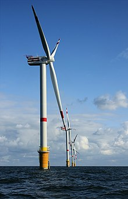

Vēja turbīnas iedalās mazajās, vidēja lieluma un lielajās turbīnās. Mazo jaudu turbīnām jauda ir 20 līdz 3000 W.
Tās izmanto atsevišķu objektu energoapgādei. Savukārt vidēji lielu turbīnu jauda ir no 30—600 kW. Vidēji lielās turbīnas apvieno grupās — vēja fermās. Šīs turbīnas izmanto komerciālās enerģijas ražošanai.
Vēja turbīnām mēdz būt dažāds spārnu skaits — no viena līdz pat ļoti daudziem, bet vispopulārākās ir trīsspārnu turbīnas.
Lielo turbīnu jauda pārsniedz 1 MW un šīs turbīnas spēj nodrošināt ar elektrību nelielu pilsētiņu.

vejaturbinas
vejaturbinuuzbuve